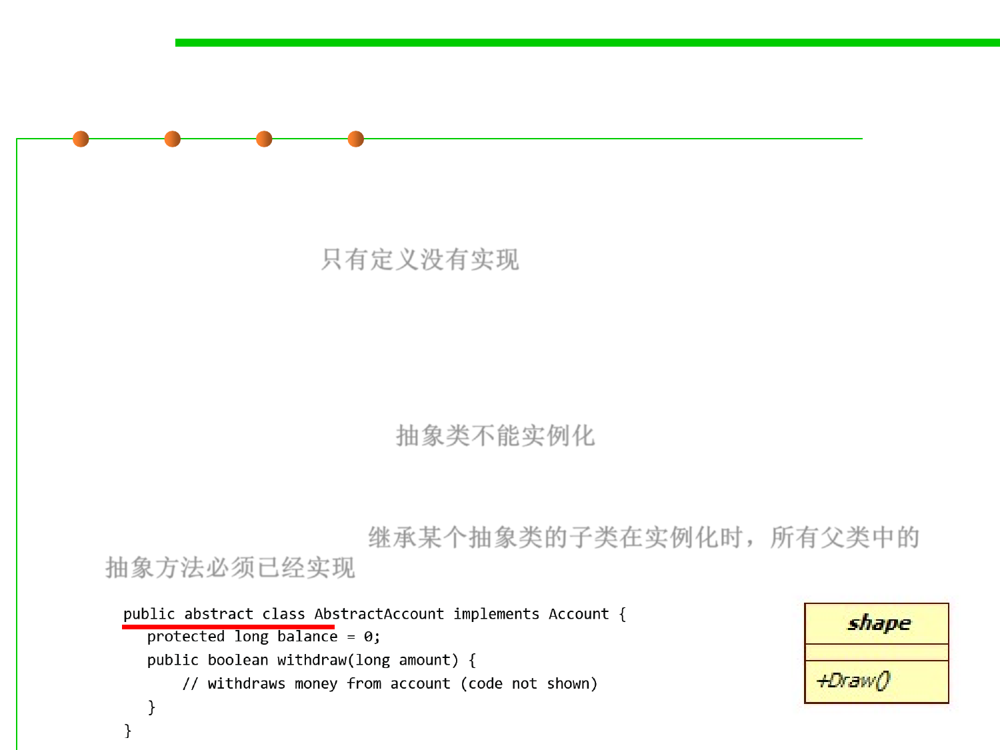

3.4 Object-Oriented Programming (OOP)
Abstract Methods and Abstract Classes
▪ Abstract method:
– A method with a signature but without an implementation (also called
abstract operation) 只有定义没有实现
– Defined by the keyword abstract
▪ Abstract class:
– A class which contains at least one abstract method is called abstract class
– It cannot be instantiated! 抽象类不能实例化
– Before a class derived from an abstract class can be instantiated, all
abstract methods of its parent classes must be implemented by some class
in the derivation chain. 继承某个抽象类的子类在实例化时，所有父类中的
抽象方法必须已经实现